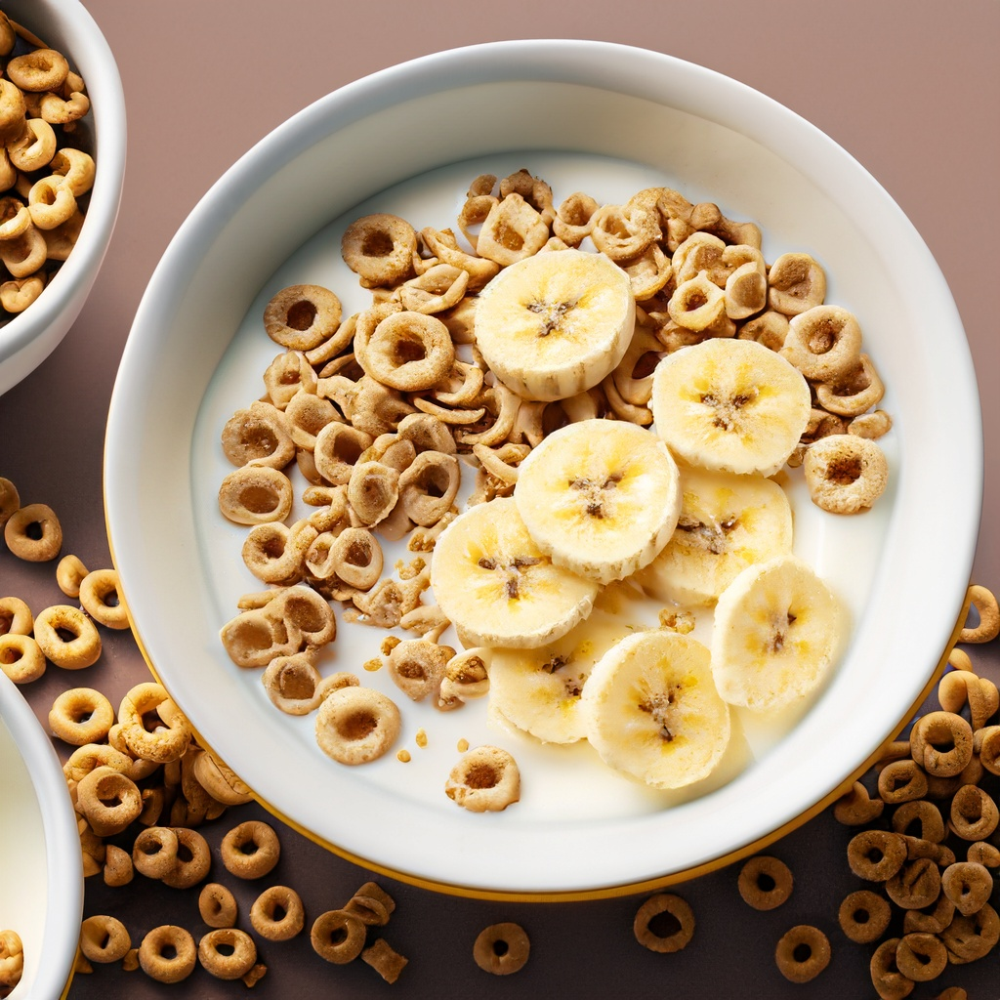

Ethan's OG Cereal Recipe

As a child, one of my favorite breakfast treats was the delightful combination of Cheerios and Mini Wheats cereals. Each morning, I would eagerly pour a bowl, creating a mosaic of textures and flavors that never failed to excite my taste buds. The Cheerios added a comforting crunch and a subtle, slightly sweet taste, while the Mini Wheats brought a delightful contrast with their hearty, wheaty goodness and a touch of frosting that would slowly melt into the milk. This cereal duo was more than just a morning meal; it was a nostalgic part of my childhood, a comforting and delicious start to the day that I'll always cherish. - Chat GPT